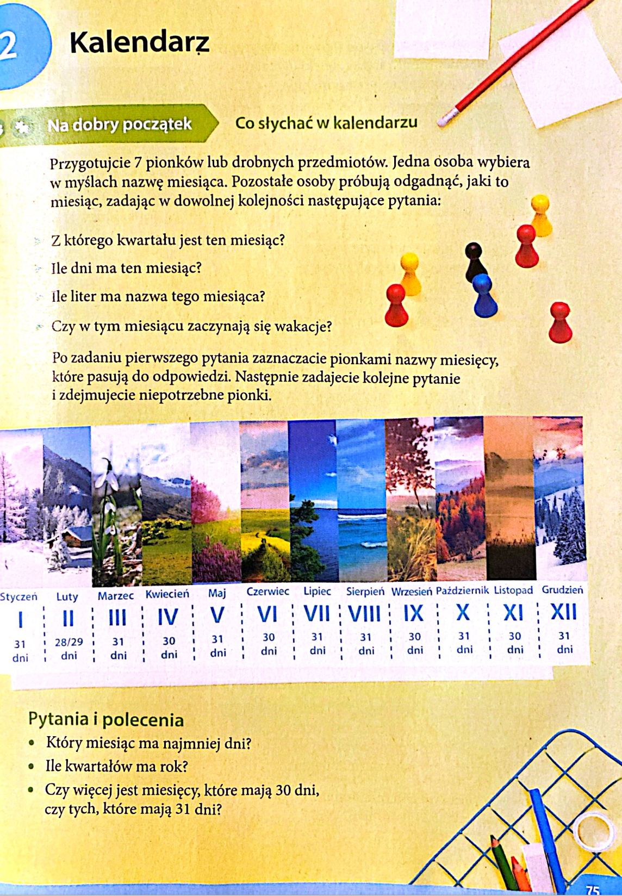
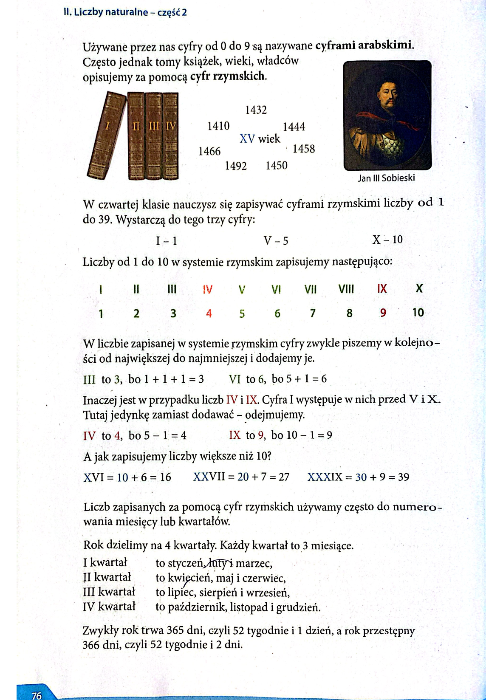

Matematyka
Liczby naturalne - czesc 2
Lekcja 12
Kalendarz / 75-80
Kalendarz

Rok kalendarzowy ma 12 miesięcy. Liczba dni w roku to 365 w roku zwykłym lub 366 w roku przestępnym. Każdy miesiąc dzieli się na tygodnie – 1 tydzień to 7 dni.
Poszczególne miesiące mają różną liczbę dni:
Styczeń, marzec, maj, lipiec, sierpień, październik, grudzień – mają po 31 dni.
Kwiecień, czerwiec, wrzesień, listopad – mają po 30 dni.
Luty – ma 28 dni w roku zwykłym i 29 w roku przestępnym. Rok przestępny następuje co 4 lata.
Jeden rok dzieli się na kwartały – jest ich 4. W każdym kwartale są 3 miesiące. Kolejne kwartały zapisujemy cyfrą rzymską.
- I kwartał: styczeń, luty, marzec
- II kwartał: kwiecień, maj, czerwiec
- III kwartał: lipiec, sierpień, wrzesień
- IV kwartał: październik, listopad, grudzień
100 lat to jeden wiek. Kolejność wieków podajemy używając cyfr rzymskich. XXI wiek rozpoczął się 1 stycznia 2001 roku. Wiek XIX trwał do 31 grudnia 2000 roku.
Po co mamy różne systemy liczbowe?
Nie tylko system dziesiętny istnieje na świecie! Inne systemy liczbowe to:
- 🔹 System rzymski (I, V, X, L, C, D, M)
- 🔹 System binarny (0 i 1 – używany w komputerach)
- 🔹 System szesnastkowy (cyfry 0–9 i litery A–F)
Zapis liczb w systemie rzymskim
W dawnych czasach ludzie nie używali cyfr, tylko liter:
- 1 → I
- 5 → V
- 10 → X
- 50 → L
- 100 → C
- 500 → D
- 1000 → M
✏ Przykłady:
- 📌 12 = XII (10 + 2)
- 📌 39 = XXXIX (10 + 10 + 10 + 9)
- 📌 99 = XCIX (100 – 10 + 10 – 1)

